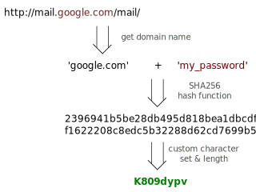

Password Generator

This service generates unique passwords for each website you use, based on website domain and one master password. It is available online and as a Chrome extension.
Many people use the same one or two passwords for every website and service. This is not very secure, since when just one of those websites is hacked, or turns evil, or is pressured by KGB, you lose your password for all other services as well. One solution is to use a password manager, that stores all the passwords. But what to do if you switch the computer? Either you have to manually copy the passwords, or store the passwords online (see above).
Another solution is to generate passwords for each website according to simple rules, based on one master password (that rules them all) and the website domain. One required condition is for these rules not to be reversible, so that website couldn't guess the master password from their domain-specific passwords. This is how it works:
The idea of generating passwords by such algorithm is taken from PasswordMaker, and passwords, generated by Password Generator are mostly compatible with ones from PasswordMaker. One difference is that this implementation is created to be as simple to use as possible, and for that reason it intentionally excludes some of the more advanced settings of PasswordMaker.
Password Generator is open source. Here is its repository on GitHub
Features
- SHA256, SHA1 and MD5 can be used as hash function.
- There is an option to make sure the password contains at least one symbol of each type (upper/lower case letters, digits, punctuation).
- Several profiles can be created with different settings and master passwords.
- Master password can be stored in memory, permanently (not recommended), or not at all.
- In Chrome extension version the settings (but not master password) are synchronized across Chrome instances.
- Online version does not store any data on the server. As a matter of fact it is hosted on GitHub Pages, that allow only static content.
- Remember profile used for each domain.
Frequently Asked Questions
- Why should I trust this service? Can't my passwords be silently sent to some evil organization?
- The website and extension are open source. No code is obfuscated. Also, the Chrome Extension version does not actually has permissions to access any server.
- Is there an Android/iOS version?
- Currently no. But the online version is optimized to work well in mobile browsers.
- What to do if my password for one websites was compromised?
- If your password for example.com was compromised, in future use example.com1 to generate password for this website. The Chrome extension version will remember this substitution and will automatically use this new string instead of the domain.
- Wouldn't using HMAC to generate passwords be more secure?
- In most cases using HMAC will not make much difference for generating passwords. Still, HMAC will be implemented in Password Generator soon.
- Where to send bug reports and feature requests?
- If you have a GitHub account, please create an issue on GitHub. You can also send me an email: oleg@eterevsky.com.